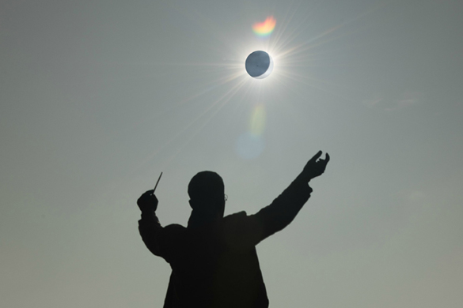

Gustav Holst was at the heart of the renaissance in English music during the first half of the 20th century.
His statue was unveiled on 4 April 2008 by Mark Elder, the Music Director of the Halle Orchestra.

The Planets, Op. 32, is the most famous work of Gustav Holts. It is a seven-movement orchestral suite dedicated to Mars, Venus, Mercury, Jupiter, Saturn, Uranus and Neptune.